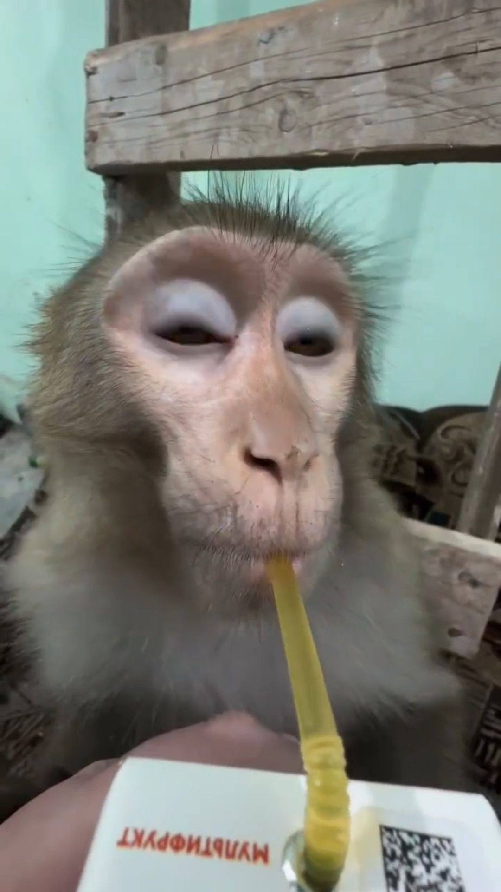

Признание за рубежом
Советские мультфильмы регулярно получали призы на крупнейших международных фестивалях — Каннском, Венецианском и других. Мировые критики ставили их в один ряд с лучшими работами Disney.
МузМульт — уникальный виртуальный музей, посвящённый советской анимации. Здесь собраны экспонаты из трёх легендарных студий, создавших мультфильмы, которые до сих пор любят миллионы людей.
Советская анимация — это целая вселенная добра, юмора и мудрости. От приключений Чебурашки до знаменитой погони Волка и Зайца — каждый мультфильм стал частью культурного наследия страны.
Исследуйте залы по студиям, читайте истории создания любимых героев и открывайте для себя эпоху, когда мультфильмы делали вручную — кадр за кадром, с любовью и мастерством.

Из фондов МузМульт
МузМульт был основан группой энтузиастов, влюблённых в советскую анимацию. Идея создать виртуальный музей родилась из желания сохранить память о великой эпохе, когда советские мультфильмы покоряли международные фестивали и воспитывали целые поколения.
Наша коллекция охватывает работы трёх ключевых студий: московского «Союзмультфильма», киевского «Киевнаучфильма» и телевизионного объединения «Экран». Каждая студия внесла неоценимый вклад в мировое анимационное искусство.
Сегодня МузМульт — это пространство, где каждый может вернуться в детство, узнать об истории создания любимых персонажей и открыть для себя новые грани советской анимационной классики.
Три студии — три зала. Откройте для себя шедевры каждой из них
Удивительные истории из мира советских мультфильмов
Советские мультфильмы регулярно получали призы на крупнейших международных фестивалях — Каннском, Венецианском и других. Мировые критики ставили их в один ряд с лучшими работами Disney.
Каждый кадр мультфильма рисовался художником вручную на целлулоиде. Для одной минуты анимации требовалось около 1440 отдельных рисунков — огромный труд настоящих мастеров.
Чебурашка стал невероятно популярен в Японии — настолько, что японцы сделали его талисманом своей олимпийской сборной. Советский персонаж покорил сердца людей по всему миру.
Многие советские мультфильмы создавались как настоящие музыкальные произведения. Композиторы, работавшие над ними, — Шаинский, Крылатов, Гладков — создавали музыку, ставшую народной.
Советские мультфильмы намеренно делались многоуровневыми: дети видели простую историю, а взрослые — философский подтекст, сатиру и глубокие нравственные послания.
Большинство советских мультфильмов создавались по мотивам литературных произведений — от Чуковского и Успенского до мировой классики. Анимация служила способом познакомить детей с книгами.
Откройте залы по студиям и погрузитесь в мир советской анимации. История, персонажи и шедевры ждут вас!